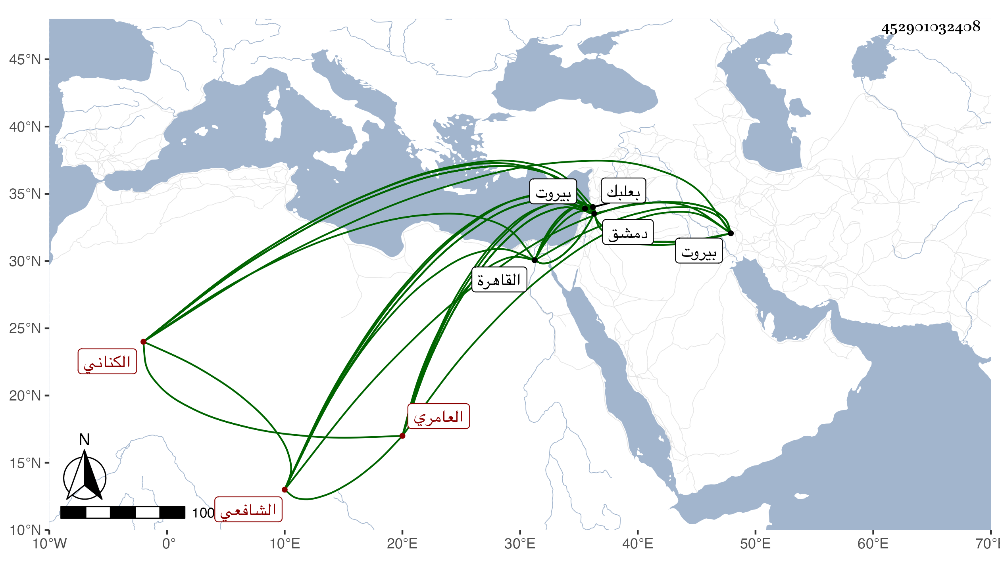

0902Sakhawi.DawLamic.ITO20230111-ara1.EIS1600.452901032408
Biography ID: 452901032408
141
أبو بكر بن علي بن سالم بن أحمد التقي الكناني العامري الشافعي ابن عم قاضي الزبداني . ولد في ذي الحجة سنة خمسين واشتغل بدمشق فبرع في الفرائض والحساب وشارك في الفقه وقرأ في الأصول وولي قضاء بعلبك وبيروت وكفر طاب وكان يقرأ في المحراب جيدا وقدم القاهرة بعد الفتنة الكبرى وكان قد أسر مع التمرية ثم خلص وأخبر عن بعض من أسره أنه قال له علامة وقوع الفتنة كثرة نباح الكلاب وصياح الديكة في أول الليل قال وكان ذلك قد كثر بدمشق قبل مجيء تمر وكان مع ما اشتمل عليه من الفضل دينا خيرا يتعانى المتجر . مات بدمشق في ذي الحجة سنة سبع عشرة . ذكره شيخنا في أنبائه وأرخه المقريزي في عقوده في مستهل جمادى الأولى سنة خمس عشرة وطول ترجمته فالله أعلم .
